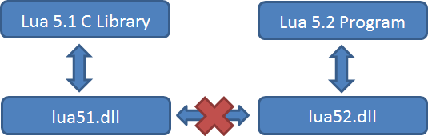
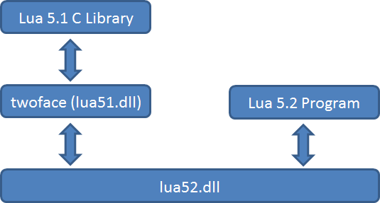

A Lua 5.1 style ABI on top of lua52.dll
This project is maintained by corsix

Lua C libraries built against Lua 5.1 expect the Lua 5.1 ABI, whereas C programs which use Lua 5.2 expect the Lua 5.2 ABI. These two ABIs are significantly different, meaning that 5.2 programs cannot

twoface is a DLL which consumes the 5.2 ABI and presents a 5.1 style ABI, thereby allowing a 5.2 program to load most 5.1 C libraries without the need for any recompilation.
LUA_GLOBALSINDEX can increase stack usage by one slot, which will cause problems for libraries which (wrongly) already used all of Lua's "internal" slots.lua_getfenv/lua_setfenv on threads instead gets/replaces LUA_GLOBALSINDEX.lua_setfenv fails on C closures which weren't created by twoface, and on Lua functions which don't report an _ENV upvalue. For such functions, lua_getfenv will return something, but it might not be accurate.lua_setfenv on a Lua function may affect more than just one closure.lua_load expects Lua 5.2 source code.lua_load and lua_dump work with Lua 5.2 bytecode rather than Lua 5.1 bytecode.LUA_HOOKTAILRET has been swapped for LUA_HOOKTAILCALL.luaopen_base won't load the coroutine library.